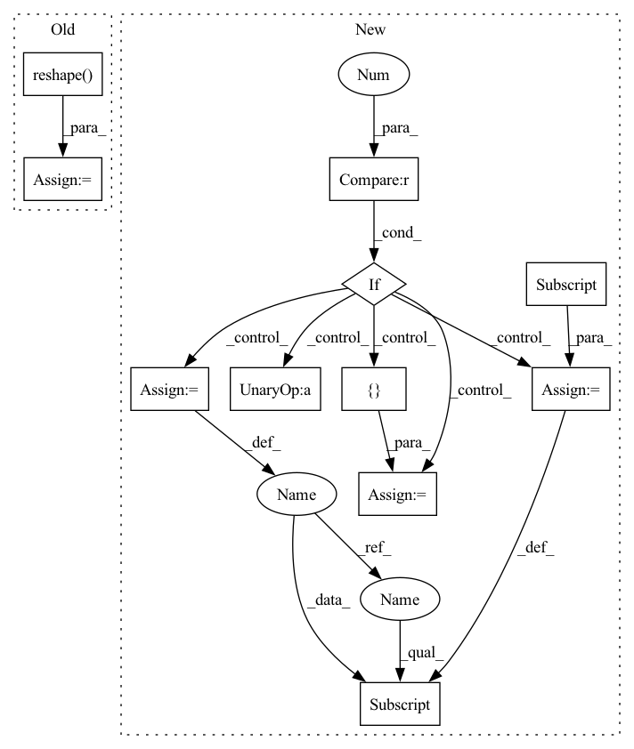

Pattern ID :36637

Before Change
x = F.relu(fc(x))
x = self.dropout(x)
x = self.fc[-1](x) // (B*N, 1)
x = torch.reshape(x, (B, N)) // (B, N)
return x
After Change
def forward(self, x):
B, N, C = x.shape
if self.context > 1:
z = [x]
for d in range(1, self.context // 2 + 1):
z_u = torch.zeros_like(x)
z_u[:, d:, :] = x[:, :-d, :] // i-d
z.append(z_u)
z_d = torch.zeros_like(x)
z_d[:, :-d, :] = x[:, d:, :] // i+d
z.append(z_d)
x = torch.cat(z, dim=2) // (B, N, C*width)
x = x.view(B*N, -1) // (B*N, C*width)
for fc in self.fc[:-1]:
In pattern: SUPERPATTERN
Frequency: 3
Non-data size: 11
Instances
Fragment ID: 104218166
Project Name: mxfold/mxfold2
Commit Name: c37c09d1ad2940a13dd4c82253c8607c8175115a
Time: 2019-11-06
Author: satoken@bio.keio.ac.jp
File Name: dnnfold/fold/layers.py
M Class Name: FCUnpairedLayer
N Class Name: FCUnpairedLayer
M Method Name: forward(2)
N Method Name: forward(2)
M Parent Class: nn.Module
N Parent Class: nn.Module
M File Name: dnnfold/fold/layers.py
N File Name: dnnfold/fold/layers.py
M Start Line: 117
M End Line: 123
N Start Line: 121
N End Line: 137
'>
Before Change
self.clf.fit(_X, _y, sample_weight=sample_weight)
while True:
unlabled_y_d = self.clf.decision_function(unlabled_X) // linear: w^Tx + b
unlabled_y_= unlabled_y.reshape(-1)
epsilon = 1 - unlabled_y_ * unlabled_y_d // calculate function margin
positive_set, positive_id = epsilon[unlabled_y > 0], u_X_id[unlabled_y > 0]
negative_set, negative_id = epsilon[unlabled_y < 0], u_X_id[unlabled_y < 0]
positive_max_id = positive_id[np.argmax(positive_set)]
After Change
// for i in range(len(y)):
// if y[i]==0:
// y[i]=-1
if len(classes)!=2:
raise ValueError("TSVM can only be used in binary classification.")
// print(classes)
self.class_dict={classes[0]:-1,classes[1]:1}
self.rev_class_dict = {-1:classes[0] , 1:classes[1]}
y=copy.copy(y)
for _ in range(L):
y[_]=self.class_dict[y[_]]
self.clf.fit(X, y)
unlabled_y = self.clf.predict(unlabled_X)
// y = np.expand_dims(copy.copy(y), 1)
// unlabled_y = np.expand_dims(unlabled_y, 1)
u_X_id = np.arange(len(unlabled_y))
_X = np.vstack([X, unlabled_X])
_y = np.hstack([y, unlabled_y])
while self.Cu < self.Cl:
print(self.Cu)
self.clf.fit(_X, _y, sample_weight=sample_weight)
while True:
unlabled_y_d = self.clf.decision_function(unlabled_X) // linear: w^Tx + b
epsilon = 1 - unlabled_y * unlabled_y_d // calculate function margin
positive_set, positive_id = epsilon[unlabled_y > 0], u_X_id[unlabled_y > 0]
negative_set, negative_id = epsilon[unlabled_y < 0], u_X_id[unlabled_y < 0]
'>
Fragment ID: 104218198
Project Name: ygzwqzd/lamda-ssl
Commit Name: 583dd75539ccb548ccfa1f9f19745f30ddb05288
Time: 2022-02-09
Author: 1129198222@qq.com
File Name: Semi_sklearn/Model/Classifier/TSVM.py
M Class Name: TSVM
N Class Name: TSVM
M Method Name: fit(4)
N Method Name: fit(4)
M Parent Class: ClassifierMixin,TransductiveEstimator
N Parent Class: ClassifierMixin,TransductiveEstimator
M File Name: Semi_sklearn/Model/Classifier/TSVM.py
N File Name: Semi_sklearn/Model/Classifier/TSVM.py
M Start Line: 65
M End Line: 92
N Start Line: 66
N End Line: 122
'>
Before Change
x = F.relu(fc(x))
x = self.dropout(x)
x = self.fc[-1](x) // (B*N, 1)
x = torch.reshape(x, (B, N)) // (B, N)
return x
After Change
def forward(self, x):
B, N, C = x.shape
if self.context > 1:
z = [x]
for d in range(1, self.context // 2 + 1):
z_u = torch.zeros_like(x)
z_u[:, d:, :] = x[:, :-d, :] // i-d
z.append(z_u)
z_d = torch.zeros_like(x)
z_d[:, :-d, :] = x[:, d:, :] // i+d
z.append(z_d)
x = torch.cat(z, dim=2) // (B, N, C*width)
'>
Fragment ID: 104218165
Project Name: mxfold/mxfold2
Commit Name: c37c09d1ad2940a13dd4c82253c8607c8175115a
Time: 2019-11-06
Author: satoken@bio.keio.ac.jp
File Name: dnnfold/fold/layers.py
M Class Name: FCUnpairedLayer
N Class Name: FCUnpairedLayer
M Method Name: forward(2)
N Method Name: forward(2)
M Parent Class: nn.Module
N Parent Class: nn.Module
M File Name: dnnfold/fold/layers.py
N File Name: dnnfold/fold/layers.py
M Start Line: 117
M End Line: 123
N Start Line: 121
N End Line: 137